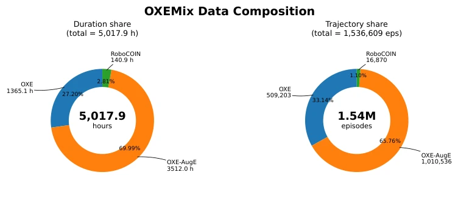
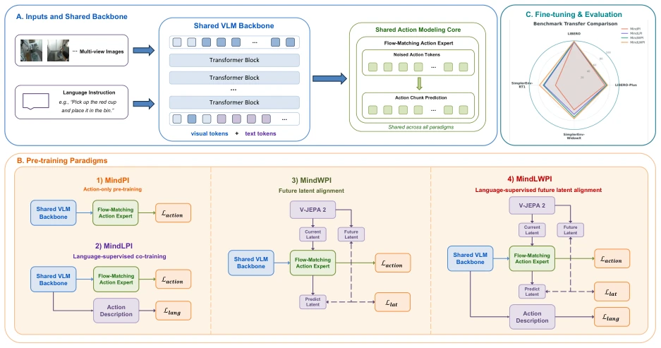
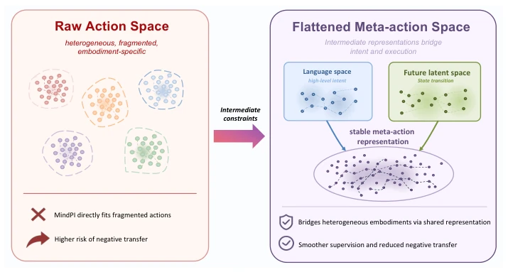
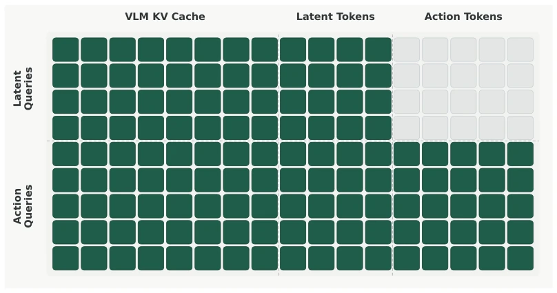
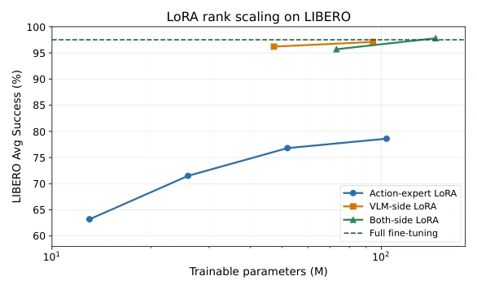

VLAFlow: A Unified Training Framework for Vision-Language-Action Models via Co-training and Future Latent Alignment
Guoyang Xia, Fengfa Li, Hongjin Ji, Lei Ren, Fangxiang Feng, Kun Zhan abspdf
论文点评Review
这篇论文没整花哨的新架构，而是搞了个“公平竞技场”VLAFlow，把四种训练范式放在同一套π0风格骨架下PK。优点在于控制变量做得漂亮，5000小时异构数据下，直接打脸了“数据越大越好”的盲目迷信，指出纯动作监督在异构数据上容易负迁移。缺点嘛，框架虽好，但本质上还是调参和组合的活儿，MindLWPI 虽然稳，但计算开销和复杂度也上去了。不过，它提出的“元动作空间”视角挺有意思，把语言意图和状态转移当成中间约束，算是给 VLA 训练加了点“导航仪”。总之，适合想搞 VLA 预训练的人参考，别光看 SOTA 数字，得看训练目标怎么设计。
This paper does not introduce fancy new architectures, but instead establishes a 'fair arena' VLAFlow, pitting four training paradigms against each other under the same π0-style skeleton. The advantage lies in the excellent control of variables; under 5000 hours of heterogeneous data, it directly refutes the blind superstition that 'the more data, the better,' highlighting that pure action supervision is prone to negative transfer on heterogeneous data. The drawback is that, although the framework is sound, it essentially boils down to hyperparameter tuning and combination; while MindLWPI is stable, its computational overhead and complexity have also increased. However, its proposed 'meta-action space' perspective is quite interesting, treating language intent and state transitions as intermediate constraints, effectively adding a 'navigation system' to VLA training. In conclusion, it is suitable for reference by those engaged in VLA pre-training; one should not merely focus on SOTA metrics but examine how training objectives are designed.
Existing VLA models vary in architecture, data, and action space, making it difficult to fairly compare the effectiveness of pretraining paradigms [6]. While pure action modeling (e.g., π0) is simple, it is susceptible to distribution differences on heterogeneous data, leading to negative transfer [12, 14]. Although language supervision (e.g., π0.5) and latent future prediction (e.g., V-JEPA 2) have been proposed, there is a lack of a unified framework to verify their complementarity [2, 7]. This paper aims to address the question of 'how different training objectives affect downstream transfer under the same architecture and data,' filling the gap in controlled variable comparisons and avoiding resource waste from blindly accumulating data. Particularly when pretraining data and downstream tasks differ significantly in robot embodiment, action space, or sampling frequency, existing methods often fail, necessitating an exploration of the role of intermediate representations.

Figure 1: Composition of the OXEMix pre-training corpus in terms of duration and trajectory counts.
The core is the VLAFlow unified framework, with data sourced from OXEMix (approximately 5000 hours of heterogeneous data). The architecture adopts a π0-style design, sharing a Qwen3-VL backbone and a Flow-Matching action expert. The four paradigms differ in auxiliary supervision signals: MindPI uses only action loss; MindLPI adds language action description loss (LAP style); MindWPI introduces future latent feature alignment loss extracted by V-JEPA 2; MindLWPI combines both. During training, KV Cache is shared; during inference, only the action expert generates continuous actions. MindLWPI also employs AvgPool-k4 to compress latent tokens to reduce overhead. During downstream fine-tuning, MindLPI disables the language loss, MindWPI retains the latent loss, and MindLWPI retains both. By controlling variables, it ensures that differences arise solely from the training objectives.

Figure 2: Overview of VLAFlow. VLAFlow conducts controlled comparison of different VLA train- ing paradigms under a unified architecture, data mixture, and evaluation setting. A. Inputs and shared backbone. The model takes multi-view visual observations and a language instruction as input, encodes visual and text tokens with a shared VLM backbone, and passes multimodal context to a flow-matching action expert through KV-cache sharing for continuous action-chunk prediction. B. Pre-training paradigms. The main diagram shows three basic paradigms (MindPI, MindLPI, MindWPI) and their combination MindLWPI: MindPI uses only action-modeling loss; MindLPI in- troduces language action-description supervision in addition to the action loss; MindWPI intro- duces future latent alignment by using V-JEP

Figure 4: Comparison of training paradigms from the perspective of meta-action space. MindPI directly fits heterogeneous action labels and is vulnerable to differences in robot embodiment, sampling frequency, and action definition. MindLPI provides high-level action-intent constraints through language space. MindWPI provides state-transition constraints through future visual la- tent space. MindLWPI jointly uses language and future latent space so that action intent and state transition constrain action representations in the same framework, forming a smoother meta- action space.

Figure 5: Attention mask used in MindWPI and MindLWPI. Rows denote query tokens and columns denote key/value tokens. Latent queries can attend to the VLM KV cache and latent tokens, but are masked from action tokens to prevent shortcut prediction. Action queries can attend to the VLM KV cache, latent tokens, and action tokens, allowing action generation to use predictive latent context.
Evaluated on LIBERO, LIBERO-Plus, and SimplerEnv. MindPI full-parameter pretraining exhibits negative transfer on heterogeneous data (e.g., RT-1), whereas MindLWPI performs most stably. LIBERO-Plus zero-shot perturbation tests indicate that language supervision improves robustness, while future latent alignment enhances state transition modeling. Ablation experiments show that MindLPI performs better without gradient clipping, and MindWPI pretraining requires balancing the ratio between action and latent loss. Mixed fine-tuning on SimplerEnv exhibits bias, whereas platform-specific fine-tuning is more reliable. The conclusion is that language and future latent signals are complementary, jointly smoothing the optimization space. MindLWPI achieves a 99.1% average success rate on LIBERO, significantly outperforming the baseline.

Figure 3: LoRA rank scaling on LIBERO. The horizontal axis is the number of trainable parameters (M), and the vertical axis is the average success rate over the four LIBERO suites. The horizontal dashed line indicates the MindPI (Full PT) full-parameter fine-tuning baseline.